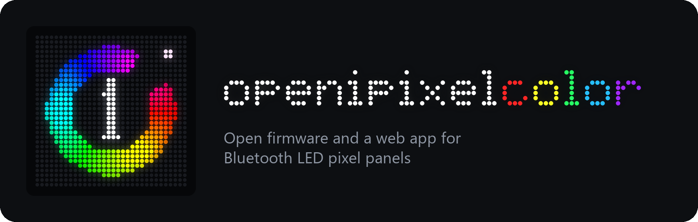

The first logo, rebuilt: an open colour ring, the colours of the panel, around a pixel "i", with one pixel escaping through the gap. Text is at least 7 px tall, words step in one at a time, and everything moves with easing at 25 frames a second.
